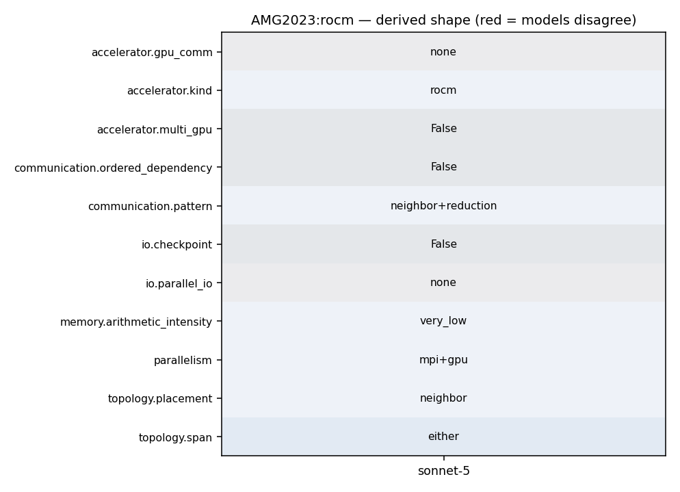

mpirun -np <P*Q*R> --gpus-per-task 1 ./amg -P <px> <py> <pz>
20 21 option(AMG_WITH_MPI "Use MPI" TRUE) 22 option(AMG_WITH_CUDA "Use CUDA" FALSE) 23 option(AMG_WITH_HIP "Use HIP" FALSE) 24 option(AMG_WITH_CALIPER "Enable Caliper" FALSE) 25 option(AMG_WITH_OMP "Enable OpenMP" FALSE) 26 option(AMG_WITH_UMPIRE "Enable Umpire support (requires Umpire support in HYPRE)" FALSE) 27 28 find_library(HYPRE_LIBRARIES 29 NAMES HYPRE 30 HINTS ${HYPRE_PREFIX}/lib) 31 find_path(HYPRE_INCLUDE_DIR 32 NAMES HYPRE.h 33 HINTS ${HYPRE_PREFIX}/include) 34 35 include(FindPackageHandleStandardArgs) 36 find_package_handle_standard_args(HYPRE DEFAULT_MSG 37 HYPRE_LIBRARIES 38 HYPRE_INCLUDE_DIR) 39 40 if (NOT HYPRE_FOUND) 41 message(FATAL_ERROR "Hypre not found") 42 endif() 43
49 HYPRE_CUDA_LIBS = -L${HYPRE_CUDA_PATH}/lib64 -lcudart -lcusparse -lcublas -lcurand 50 51 ######################################################################## 52 # HIP options set correct path depending on rocm version 53 ######################################################################## 54 HYPRE_HIP_PATH = #/opt/rocm-5.4.1 55 HYPRE_HIP_INCLUDE = #-I${HYPRE_HIP_PATH}/include 56 HYPRE_HIP_LIBS = #-L${HYPRE_HIP_PATH}/lib -lamdhip64 -lrocsparse -lrocrand 57 58 ################################################################## 59 ## UMPIRE options
8 hypre-2.27.0 or higher. 9 10 AMG2023 is written in C. It is a SPMD code which uses MPI and OpenMP threading within MPI tasks. 11 Parallelism is achieved by data decomposition, which is here achieved by simply subdividing 12 the grid into logical P x Q x R (in 3D) chunks of equal size. 13 It can also be used on NVIDIA, AMD, and Intel GPUs via CUDA, HIP, and SYCL. 14 15 AMG2023 is distributed under the terms of both the MIT license and the Apache License (Version 2.0).
595 HYPRE_PCGSetup(pcg_solver, (HYPRE_Matrix)parcsr_A, 596 (HYPRE_Vector)b, (HYPRE_Vector)x); 597 598 hypre_MPI_Barrier(comm); 599 hypre_EndTiming(time_index); 600 #ifdef USE_CALIPER 601 CALI_MARK_END("Setup"); 602 #endif 603 hypre_GetTiming("Problem 2: AMG Setup Time", &wall_time, comm); 604 hypre_FinalizeTiming(time_index); 605 hypre_ClearTiming(); 606 fflush(NULL); 607 608 HYPRE_BoomerAMGGetCumNnzAP(pcg_precond, &cum_nnz_AP); 609 610 FOM1 = cum_nnz_AP / wall_time; 611 total_time = wall_time; 612 613 #ifdef USE_CALIPER 614 adiak_namevalue("Setup-FOM", adiak_general, NULL, "%f", FOM1); 615 #endif 616 617 if (myid == 0) 618 {
2 3 # General description: 4 5 AMG2023 is a parallel algebraic multigrid solver for linear systems arising from 6 problems on unstructured grids. The driver provided here builds linear 7 systems for various 3-dimensional problems. It requires an installation of 8 hypre-2.27.0 or higher. 9 10 AMG2023 is written in C. It is a SPMD code which uses MPI and OpenMP threading within MPI tasks. 11 Parallelism is achieved by data decomposition, which is here achieved by simply subdividing 12 the grid into logical P x Q x R (in 3D) chunks of equal size. 13 It can also be used on NVIDIA, AMD, and Intel GPUs via CUDA, HIP, and SYCL. 14 15 AMG2023 is distributed under the terms of both the MIT license and the Apache License (Version 2.0).
49 HYPRE_CUDA_LIBS = -L${HYPRE_CUDA_PATH}/lib64 -lcudart -lcusparse -lcublas -lcurand 50 51 ######################################################################## 52 # HIP options set correct path depending on rocm version 53 ######################################################################## 54 HYPRE_HIP_PATH = #/opt/rocm-5.4.1 55 HYPRE_HIP_INCLUDE = #-I${HYPRE_HIP_PATH}/include 56 HYPRE_HIP_LIBS = #-L${HYPRE_HIP_PATH}/lib -lamdhip64 -lrocsparse -lrocrand 57 58 ################################################################## 59 ## UMPIRE options
357 * GPU Device binding 358 * Must be done before HYPRE_Init() and should not be changed after 359 *-----------------------------------------------------------------*/ 360 hypre_bind_device(myid, num_procs, comm); 361 #ifdef USE_CALIPER 362 CALI_MARK_BEGIN("Hypre init"); 363 #endif
8 hypre-2.27.0 or higher. 9 10 AMG2023 is written in C. It is a SPMD code which uses MPI and OpenMP threading within MPI tasks. 11 Parallelism is achieved by data decomposition, which is here achieved by simply subdividing 12 the grid into logical P x Q x R (in 3D) chunks of equal size. 13 It can also be used on NVIDIA, AMD, and Intel GPUs via CUDA, HIP, and SYCL. 14 15 AMG2023 is distributed under the terms of both the MIT license and the Apache License (Version 2.0).
7 systems for various 3-dimensional problems. It requires an installation of 8 hypre-2.27.0 or higher. 9 10 AMG2023 is written in C. It is a SPMD code which uses MPI and OpenMP threading within MPI tasks. 11 Parallelism is achieved by data decomposition, which is here achieved by simply subdividing 12 the grid into logical P x Q x R (in 3D) chunks of equal size. 13 It can also be used on NVIDIA, AMD, and Intel GPUs via CUDA, HIP, and SYCL. 14 15 AMG2023 is distributed under the terms of both the MIT license and the Apache License (Version 2.0). 16